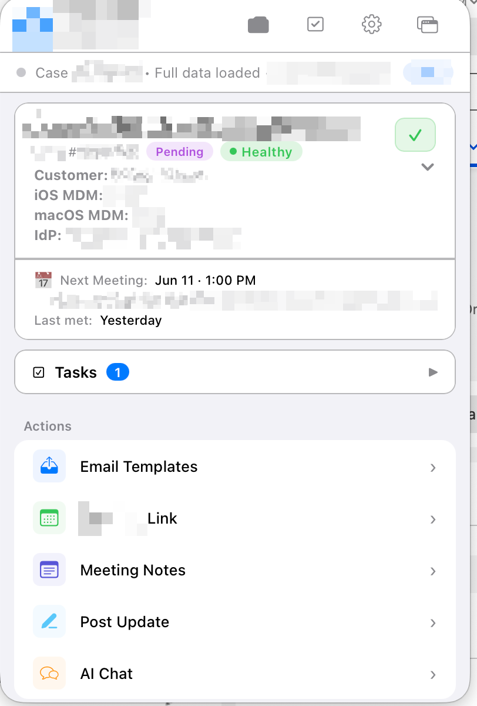

Justin Reeves
Justin Reeves
AI-powered browser extension
- The problem
- Engineers were jumping between the CRM, email, calendars, and notes to prep for every customer call.
- What I built
- An internal browser extension that sits next to the customer record. It shows case health, the customer's setup, the next meeting, and open tasks, with one-click actions for email templates, scheduling links, meeting notes, and status updates.
- Context-aware AI
- The built-in AI assistant is grounded in each customer's full engagement history, our deployment process, and the engineer's role. Its answers and drafts reflect where that customer actually is, not generic advice.
- Result
- Used every day across the deployment team.